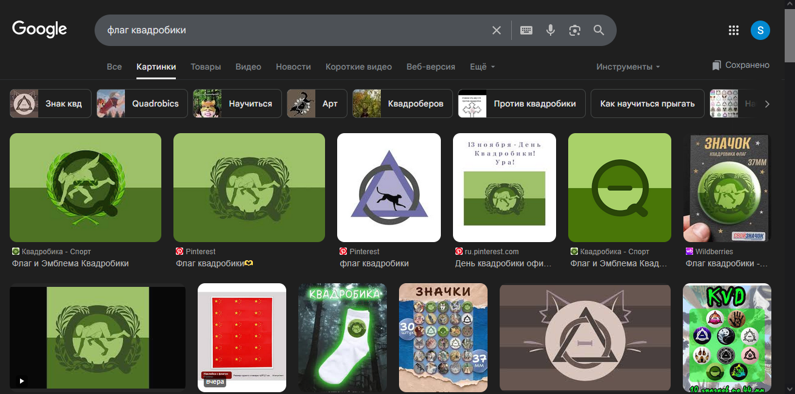

Копия поста от https://t.me/Japanese_Empire_of_Anti_CVD/320
(Несоклько копий на канале из-за проблем с скриптом, да)
Само понятие "квадробинг" появилось ещё в далёком 2015 году, предположительно, в Японии. Но это явление не получало особого внимания вплоть до весны 2024 года, когда данная субкультура пришла в Россию.
с 1 абзацом я не знаю что ответить, ибо узнал о квд где-то в 2024.
Что из себя представляет это движение? Всё просто - люди переодеваются в животных и пытаются максимально спародировать их внешность и поведение. В частности, это движение затронуло поколение Z и Альфа, случаев, с участием более старших поколений в этом увлечении, пока что, не наблюдалось.
2 абзац, Вы путаете, квд это когда маска, хвост , лапки, переодиваться в животных — фурри субкультура. Насчёт поведения это ближе к терианам, так как уже у тех поведение больше чем у животных,
Уже к лету 2024 года это движение стало резко набирать популярность. Естественно, вместе с этим возросло количество неадекватов в данной сфере. Например, квадробер укусил на детской площадке другого ребёнка, который к данной культуре не имеет никакого отношения (фотографии 1-2) (источник: ...).
3 абзац, С ним согласен, так как куча неадекватных 8-9 летних детей появилось в данном комьюнити, НО ваш источник не работает (пиздёж?), скрин 1
К октябрю 2024 года ситуация обострилась ещё сильнее, так как ежедневно стали происходить случаи, когда квадроберы мешают нормально жить обычным людям, что стало поводом для размещения СМИ новостей, и даже попытками запретить это движение на законодательном уровне, но, пока что, предложение даже не приняли (фотографии 3-7) (источник: t.me/+qKeau08SQ...)
4 абзац, такое вроде в СИМ было, НО это были маленькие дети и малый процент с этого, остальные ведут себя прилично. Насчёт законодательного уровня запрета данного движения — я не видел НИГДЕ в ру инете такого, скорее пиздите, ссылка не рабочая (скрин 2)

Как было сказано в заголовка поста, мы увидели связь квадробинга с фурри и ЛГБТ*, и сейчас это докажем. Во-первых: фурри и квадробинг практически аналогичны тем, что люди пытаются максимально спародировать животных. Разница только в том, что в фурри комьюнити уже затрагиваются более взрослые темы, в силу возраста его участников. Поэтому только вопрос времени, сколько квадроберам осталось до присоединения к фурри комьюнити.
5 абзац, откуда вы вообще увидели связь с фуррями и лгбт??? Спародировать животных это более смахивает на террианотропию, так как уже они пародируют его (они похожи на квадроберов и фуррей, но это разное), насчёт взрослых тем в фурри — это пиздёж , так как все фурряты с которыми я разговаривал и им более 18 (я не разглашал возраст) никогда не упоминали 18+.
Во-вторых: Если в поисковике запросить "флаг квадробики", то практически сразу можно увидеть публикации с сомнительными флагами, которые явно намекают на причастность этой субкультуры к ЛГБТ*. (фотография 8) (источник: nichosi.in.ua/p216974788...).
6 абзац, Я не знаю откуда вы это брали, однако кода я забиваю в google фотографию, я не нахожу ничего сомнительного. Также страница не работает (тоже пиздёж?), сркин 4. Что выдал гугл скрин 3.
Какой мы делаем вывод? Квадробику стоит запретить на территории России, так как в скором времени пойдут уже действительно плохие последствия. Так же пугает тот факт, что среди защитников квадробики имеются ВЗРОСЛЫЕ люди, которые даже не понимают опасность этого движения.
7 абзац, с этим можно поспорить, в вашем посте куча несогласий, и несоотствестий, Насчёт плохих последствий я прошу обьяснений, какие плохие последствия? Опасность данного движения может быть только что сломать что-нибудь себе, но это в любом спорте так же , если быть не осторожным.
Делаем вывод: автор слепил лгбт фурей и квадробику и пытаеться казаться крутым что рассказывает правду и типо крутой фактист (но, как обычно: о-б-л-о-м...
×